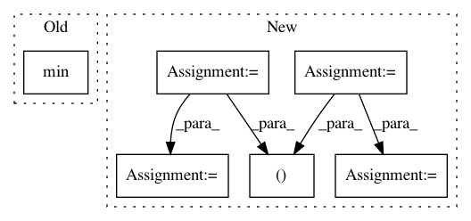

90b78b1379b3423aa3b4b5d0de7313f88bda23ab,chainercv/utils/mask/mask_to_bbox.py,,mask_to_bbox,#Any#,5
Before Change
for msk in mask:
where = np.argwhere(msk)
if len(where) > 0:
y_min, x_min = where.min(0)
y_max, x_max = where.max(0) + 1
else:
y_min, x_min, y_max, x_max = 0, 0, 0, 0
bbox.append((y_min, x_min, y_max, x_max))
After Change
R, H, W = mask.shape
xp = cuda.get_array_module(mask)
instance_index, ys, xs = xp.nonzero(mask)
bbox = xp.zeros((R, 4), dtype=np.float32)
for i in range(R):
ys_i = ys[instance_index == i]
xs_i = xs[instance_index == i]
if len(ys_i) == 0:
continue
y_min = ys_i.min()
x_min = xs_i.min()
In pattern: SUPERPATTERN
Frequency: 3
Non-data size: 6
Instances
Project Name: chainer/chainercv
Commit Name: 90b78b1379b3423aa3b4b5d0de7313f88bda23ab
Time: 2019-02-17
Author: yuyuniitani@gmail.com
File Name: chainercv/utils/mask/mask_to_bbox.py
Class Name:
Method Name: mask_to_bbox
Project Name: asyml/texar
Commit Name: 2546dbadb426502d169aed5beb5933255b6f2208
Time: 2017-12-02
Author: zichaoy@cs.cmu.edu
File Name: examples/tsf/utils.py
Class Name:
Method Name: get_batches
Project Name: allenai/allennlp
Commit Name: 44d2847610944f56a06b7cfa54faadb66e130a83
Time: 2020-08-12
Author: akshita23bhagia@gmail.com
File Name: allennlp/training/metrics/categorical_accuracy.py
Class Name: CategoricalAccuracy
Method Name: __call__